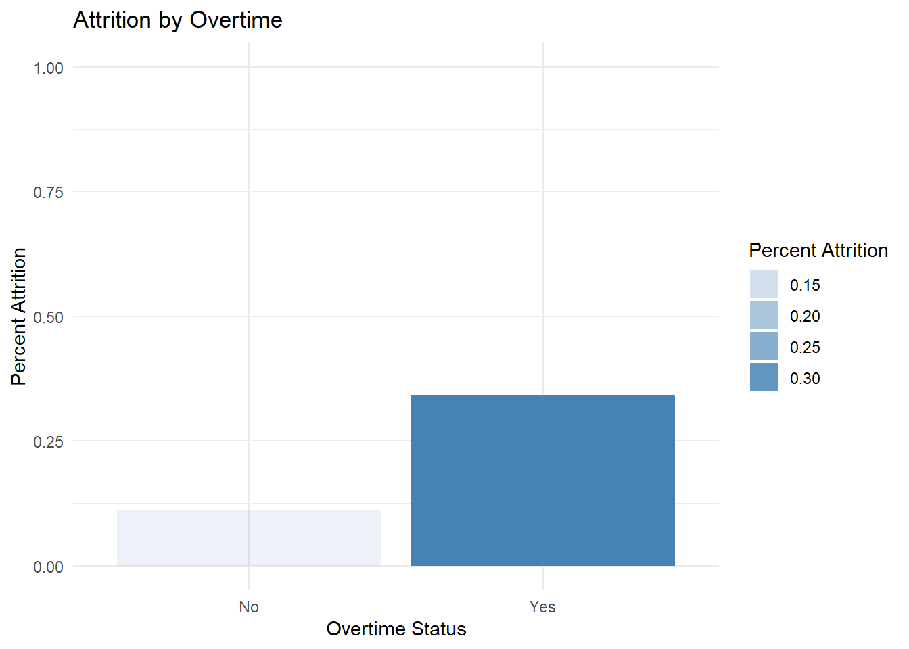
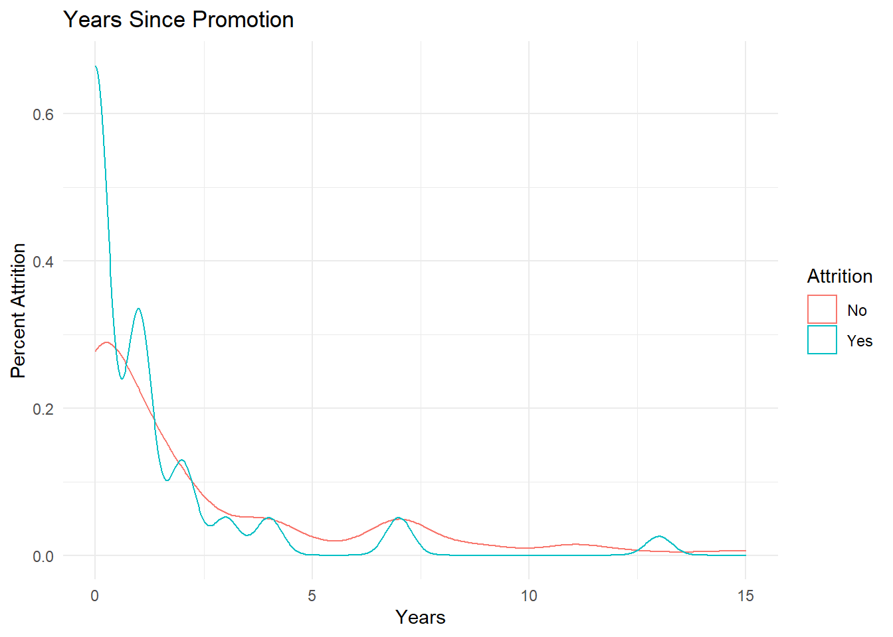

Case Study 2
Richard Kim
12/01/2021
Introduction
The purpose of this project is to identify the top predictive factors that lead to employee turnover at DDSAnalytics. In pursuit of this goal, and in hopes of using income as a predictor for attrition, we also investigate predictive models for employees’ monthly incomes. As a final step for this project, we build a classification model to reliably predict attrition among employees in the company.
Setting up
Loading necessary libraries
library(dplyr)## Warning: package 'dplyr' was built under R version 3.6.3library(ggplot2)
library(ggthemes)## Warning: package 'ggthemes' was built under R version 3.6.3library(openxlsx)## Warning: package 'openxlsx' was built under R version 3.6.3library(class) #knn## Warning: package 'class' was built under R version 3.6.3library(e1071) #naive-bayes
library(caret) #confusion matrix## Warning: package 'caret' was built under R version 3.6.3# Reading the data into two different dataframes. Be sure to modify the directories accordingly.
NoAttrition <- read.csv("D:\\Shared Lenovo\\Data Science\\Semester 1\\Doing Data Science\\Unit 14+15 - DDS Project 2\\CaseStudy2CompSet No Attrition.csv")
NoSalary <- read.xlsx("D:\\Shared Lenovo\\Data Science\\Semester 1\\Doing Data Science\\Unit 14+15 - DDS Project 2\\CaseStudy2CompSet No Salary.xlsx")Linear Regression - For Salary Prediction
Setting up new variables
# Creating a new variable to dichotomize job roles
NewNoAttrition <- NoAttrition %>%
mutate(RD_Manager0 = ifelse(grepl('Research Director|Manager',JobRole),0,1))
NewNoSalary <- NoSalary %>%
mutate(RD_Manager0 = ifelse(grepl('Research Director|Manager',JobRole),0,1))Plotting Job Roles
# Distributions for Job Roles
options(scipen = 999)
NewNoAttrition %>%
ggplot(aes(y = JobRole, x = MonthlyIncome, fill = JobRole)) +
geom_bar(stat = "summary") +
ggtitle("Monthly Income by Job Role") +
labs(x = 'Monthly Income', y = 'Job Role', fill = 'Legend') +
theme_pander()## No summary function supplied, defaulting to `mean_se()`NewNoAttrition %>%
ggplot(aes(y = JobRole, x = YearsAtCompany, fill = JobRole)) +
geom_bar(stat = "summary") +
ggtitle("Years with the Company by Job Role") +
labs(x = 'Years', y = 'Job Roles', fill = 'Legend') +
theme_pander()## No summary function supplied, defaulting to `mean_se()`# Linear Regression to create a prediction model for monthly income
fit <- lm(MonthlyIncome ~ JobLevel*JobRole + TotalWorkingYears, data = NewNoAttrition)
summary(fit)##
## Call:
## lm(formula = MonthlyIncome ~ JobLevel * JobRole + TotalWorkingYears,
## data = NewNoAttrition)
##
## Residuals:
## Min 1Q Median 3Q Max
## -2624.8 -730.5 -39.3 654.7 4323.1
##
## Coefficients:
## Estimate Std. Error t value
## (Intercept) -314.71 929.12 -0.339
## JobLevel 3006.81 355.72 8.453
## JobRoleHuman Resources -859.98 1337.51 -0.643
## JobRoleLaboratory Technician 2019.39 1052.84 1.918
## JobRoleManager 3893.94 1698.41 2.293
## JobRoleManufacturing Director -873.86 1266.71 -0.690
## JobRoleResearch Director 2615.63 2257.71 1.159
## JobRoleResearch Scientist 1911.46 1037.75 1.842
## JobRoleSales Executive -181.07 1102.55 -0.164
## JobRoleSales Representative 339.88 1665.90 0.204
## TotalWorkingYears 44.73 13.60 3.290
## JobLevel:JobRoleHuman Resources 339.29 677.44 0.501
## JobLevel:JobRoleLaboratory Technician -2062.97 525.35 -3.927
## JobLevel:JobRoleManager -107.97 473.40 -0.228
## JobLevel:JobRoleManufacturing Director 170.28 491.21 0.347
## JobLevel:JobRoleResearch Director 148.57 581.13 0.256
## JobLevel:JobRoleResearch Scientist -2065.22 499.64 -4.133
## JobLevel:JobRoleSales Executive 66.53 425.68 0.156
## JobLevel:JobRoleSales Representative -764.23 1274.23 -0.600
## Pr(>|t|)
## (Intercept) 0.735076
## JobLevel 0.00000000000000156 ***
## JobRoleHuman Resources 0.520771
## JobRoleLaboratory Technician 0.056118 .
## JobRoleManager 0.022605 *
## JobRoleManufacturing Director 0.490851
## JobRoleResearch Director 0.247630
## JobRoleResearch Scientist 0.066539 .
## JobRoleSales Executive 0.869669
## JobRoleSales Representative 0.838484
## TotalWorkingYears 0.001129 **
## JobLevel:JobRoleHuman Resources 0.616873
## JobLevel:JobRoleLaboratory Technician 0.000108 ***
## JobLevel:JobRoleManager 0.819764
## JobLevel:JobRoleManufacturing Director 0.729115
## JobLevel:JobRoleResearch Director 0.798397
## JobLevel:JobRoleResearch Scientist 0.00004721450317899 ***
## JobLevel:JobRoleSales Executive 0.875907
## JobLevel:JobRoleSales Representative 0.549152
## ---
## Signif. codes: 0 '***' 0.001 '**' 0.01 '*' 0.05 '.' 0.1 ' ' 1
##
## Residual standard error: 1161 on 281 degrees of freedom
## Multiple R-squared: 0.9549, Adjusted R-squared: 0.952
## F-statistic: 330.6 on 18 and 281 DF, p-value: < 0.00000000000000022# Checking Violations of Assumptions
hist(fit$residuals)plot(fit)## Warning: not plotting observations with leverage one:
## 271## Warning: not plotting observations with leverage one:
## 271The plot of the residuals indicate that the data are mostly homoscedastic. We attempted some transformations with our variables to resolve the greater spread around 5000 along the x-axis. Unsuccessful, we concluded that it is reasonable to proceed as is. Though the final plot of the standardized residuals show that there are a few datapoints with high leverage, they do not appear to be influential points. The QQ plot indicates some aberration from normality. However, given the large sample size of 300, we choose to continue with this model with no modifications.
NewNoAttrition %>%
ggplot(aes(x = JobLevel, y = MonthlyIncome, color = JobRole)) +
geom_point() +
facet_wrap(~JobRole) +
ggtitle('Job Level by Job Roles') +
labs(y = 'Monthly Income', x = 'Job Level') +
theme_minimal()NewNoAttrition %>%
ggplot(aes(x = TotalWorkingYears, y = MonthlyIncome)) +
geom_point(color = 'steelblue') +
geom_smooth(method = 'lm') +
ggtitle('Income by Years Worked') +
labs(y = 'Monthly Income', x = 'Total Years Worked') +
theme_pander()## `geom_smooth()` using formula 'y ~ x'Predict Salary!
# Prediction Comparison
preds = predict(fit, newdata = NewNoAttrition)
# Checking predictions to actual income
NoAttritionTestIncome <- NewNoAttrition %>%
mutate(PredMonthlyIncome = preds) %>%
select(MonthlyIncome, PredMonthlyIncome)
# Imputing NoSalary Dataframe (with Regression Model)
incomepreds = predict(fit, newdata = NewNoSalary)
SalaryResults <- NewNoSalary %>%
mutate(PredictedSalary = incomepreds)Naive-Bayes - For Attrition Prediction
Setting up new variables
# Imputing NoSalary dataset with predicted income, then creating new variables for attrition
NoSalaryPredictIncome <- NewNoSalary %>%
mutate(MonthlyIncome = incomepreds,
Job_Cat = ifelse(grepl('Health|Manager',JobRole),0,
ifelse(grepl('Research|Executive',JobRole),1,
ifelse(grepl('Resoources|Manufacturing',JobRole),2,
ifelse(grepl('Representative|Laboratory',JobRole),3,NA)))),
Educ_Cat = ifelse(grepl('Technical|Human',EducationField),0,
ifelse(grepl('Marketing|Medical',EducationField),1,
ifelse(grepl('Life Sciences',EducationField),2,
ifelse(grepl('Other',EducationField),3,NA)))),
Marital_Cat = ifelse(grepl('Single',MaritalStatus),0,1),
Income_Cat = ifelse(MonthlyIncome > 19000, 0,
ifelse(MonthlyIncome > 14000, 1,
ifelse(MonthlyIncome > 10000, 2,
ifelse(MonthlyIncome > 7000, 3,
ifelse(MonthlyIncome > 4000, 4, 5))))),
Sat_Cat = ifelse(JobSatisfaction == 1, 1, 0),
Prom_Cat = ifelse(YearsSinceLastPromotion > 3, 1, 0),
WithManager = ifelse(YearsWithCurrManager == 0, 0, 1),
CurrRole = ifelse(YearsInCurrentRole > 8, 0, 1))
# Setting up NoAttrition dataset for later prediction
NoAttritionPredictDropout <- NewNoAttrition %>%
mutate(MonthlyIncome = incomepreds,
Job_Cat = ifelse(grepl('Health|Manager',JobRole),0,
ifelse(grepl('Research|Executive',JobRole),1,
ifelse(grepl('Resoources|Manufacturing',JobRole),2,
ifelse(grepl('Representative|Laboratory',JobRole),3,NA)))),
Educ_Cat = ifelse(grepl('Technical|Human',EducationField),0,
ifelse(grepl('Marketing|Medical',EducationField),1,
ifelse(grepl('Life Sciences',EducationField),2,
ifelse(grepl('Other',EducationField),3,NA)))),
Marital_Cat = ifelse(grepl('Single',MaritalStatus),0,1),
Income_Cat = ifelse(MonthlyIncome > 19000, 0,
ifelse(MonthlyIncome > 14000, 1,
ifelse(MonthlyIncome > 10000, 2,
ifelse(MonthlyIncome > 7000, 3,
ifelse(MonthlyIncome > 4000, 4, 5))))),
Sat_Cat = ifelse(JobSatisfaction == 1, 1, 0),
Prom_Cat = ifelse(YearsSinceLastPromotion > 3, 1, 0),
WithManager = ifelse(YearsWithCurrManager == 0, 0, 1),
CurrRole = ifelse(YearsInCurrentRole > 8, 0, 1))Top 3 Predictors
NumericAttrition <- NoSalaryPredictIncome %>%
mutate(Attrition = ifelse(Attrition == 'Yes',1,
ifelse(Attrition == 'No',0,NA)))
summary(lm(Attrition ~ WithManager + BusinessTravel + OverTime, data = NumericAttrition))##
## Call:
## lm(formula = Attrition ~ WithManager + BusinessTravel + OverTime,
## data = NumericAttrition)
##
## Residuals:
## Min 1Q Median 3Q Max
## -0.49889 -0.19728 -0.06365 -0.06365 0.93635
##
## Coefficients:
## Estimate Std. Error t value Pr(>|t|)
## (Intercept) 0.14018 0.08666 1.618 0.106815
## WithManager -0.21309 0.05551 -3.839 0.000151 ***
## BusinessTravelTravel_Frequently 0.27019 0.08399 3.217 0.001439 **
## BusinessTravelTravel_Rarely 0.13656 0.07504 1.820 0.069784 .
## OverTimeYes 0.22215 0.04631 4.797 0.00000256 ***
## ---
## Signif. codes: 0 '***' 0.001 '**' 0.01 '*' 0.05 '.' 0.1 ' ' 1
##
## Residual standard error: 0.3484 on 295 degrees of freedom
## Multiple R-squared: 0.1539, Adjusted R-squared: 0.1424
## F-statistic: 13.41 on 4 and 295 DF, p-value: 0.0000000004694Plotting Classification Variables
NoSalaryPredictIncome %>%
group_by(OverTime) %>%
summarize(AttritionPercent = sum(Attrition == 'Yes')/n()) %>%
mutate(OverTime = factor(OverTime,
levels = OverTime[order(AttritionPercent, decreasing = FALSE)])) %>%
ggplot(aes(x = OverTime, y = AttritionPercent, alpha = AttritionPercent)) +
geom_bar(stat = 'identity', fill = 'steelblue') +
theme_minimal() + ylim(0.0,1.0) +
ggtitle('Attrition by Overtime') +
labs(y = 'Percent Attrition', x = 'Overtime Status', alpha = 'Percent Attrition')
NoSalaryPredictIncome %>%
group_by(BusinessTravel) %>%
summarize(AttritionPercent = sum(Attrition == 'Yes')/n()) %>%
mutate(BusinessTravel = factor(BusinessTravel,
levels = BusinessTravel[order(AttritionPercent, decreasing = FALSE)])) %>%
ggplot(aes(x = BusinessTravel, y = AttritionPercent, alpha = AttritionPercent)) +
geom_bar(stat = 'identity', fill = 'steelblue') +
theme_minimal() + ylim(0.0,1.0) +
ggtitle('Attrition by Frequency of Business Travel') +
labs(x = 'Travel Frequency', y = 'Percent Attrition', alpha = 'Percent Attrition')
NoSalaryPredictIncome %>%
ggplot(aes(x = YearsWithCurrManager, color = Attrition)) +
geom_density() +
theme_minimal() +
ggtitle('Years With Current Manager') +
labs(x = 'Years with Manager', y = 'Percent Attrition')NoSalaryPredictIncome %>%
group_by(MaritalStatus) %>%
summarize(AttritionPercent = sum(Attrition == 'Yes')/n()) %>%
mutate(MaritalStatus = factor(MaritalStatus,
levels = MaritalStatus[order(AttritionPercent, decreasing = FALSE)])) %>%
ggplot(aes(y = MaritalStatus, x = AttritionPercent, alpha = AttritionPercent)) +
geom_bar(stat = 'identity', fill = 'steelblue') +
theme_minimal() + xlim(0.0,1.0) +
ggtitle('Attrition by Marital Status') +
labs(x = 'Marital Status', y = 'Percent Attrition')
NoSalaryPredictIncome %>%
group_by(EducationField) %>%
summarize(AttritionPercent = sum(Attrition == 'Yes')/n()) %>%
mutate(EducationField = factor(EducationField,
levels = EducationField[order(AttritionPercent, decreasing = FALSE)])) %>%
ggplot(aes(y = EducationField, x = AttritionPercent, alpha = AttritionPercent)) +
geom_bar(stat = 'identity', fill = 'steelblue') +
theme_minimal() + xlim(0.0,1.0) +
ggtitle('Attrition by Education Field') +
labs(x = 'Education Field', y = 'Percent Attrition')NoSalaryPredictIncome %>%
group_by(JobRole) %>%
summarize(AttritionPercent = sum(Attrition == 'Yes')/n()) %>%
mutate(JobRole = factor(JobRole,
levels = JobRole[order(AttritionPercent, decreasing = FALSE)])) %>%
ggplot(aes(y = JobRole, x = AttritionPercent, alpha = AttritionPercent)) +
geom_bar(stat = 'identity', fill = 'steelblue') +
theme_minimal() + xlim(0.0,1.0) +
ggtitle('Attrition by Job Roles') +
labs(x = 'Job Role', y = 'Percent Attrition')NoSalaryPredictIncome %>%
group_by(JobSatisfaction) %>%
summarize(AttritionPercent = sum(Attrition == 'Yes')/n()) %>%
mutate(JobSatisfaction = factor(JobSatisfaction,
levels = JobSatisfaction[order(JobSatisfaction, decreasing = TRUE)])) %>%
ggplot(aes(y = JobSatisfaction, x = AttritionPercent, alpha = AttritionPercent)) +
geom_bar(stat = 'identity', fill = 'steelblue') +
theme_minimal() + xlim(0.0,1.0) +
ggtitle('Attrition by Job Satisfaction') +
labs(x = 'Job Satisfaction', y = 'Percent Attrition')NoSalaryPredictIncome %>%
ggplot(aes(x = YearsSinceLastPromotion, color = Attrition)) +
geom_density() +
theme_minimal() +
ggtitle('Years Since Promotion') +
labs(x = 'Years', y = 'Percent Attrition')
NoSalaryPredictIncome %>%
ggplot(aes(x = YearsInCurrentRole, color = Attrition)) +
geom_density() +
theme_minimal() +
ggtitle('Years In Current Role') +
labs(x = 'Years', y = 'Percent Attrition')Test Classification Model (with Predicted Salary as a Predictor)
# SETUP FOR ATTRITION PREDICTION
# Naive-Bayes to predict attrition
nbtrainIndices = sample(1:dim(NoSalaryPredictIncome)[1],round(0.7 * dim(NoSalaryPredictIncome)[1]))
nbtrain = NoSalaryPredictIncome[nbtrainIndices,]
nbtest = NoSalaryPredictIncome[-nbtrainIndices,]
nbmodel = naiveBayes(nbtrain[,c('MonthlyIncome','Age','OverTime','Job_Cat','RD_Manager0','Educ_Cat','Marital_Cat','Income_Cat','BusinessTravel','Sat_Cat','Prom_Cat','WithManager','CurrRole')],nbtrain$Attrition)
delete <- confusionMatrix(table(predict(nbmodel,nbtest[,c('MonthlyIncome','Age','OverTime','Job_Cat','RD_Manager0','Educ_Cat','Marital_Cat','Income_Cat','BusinessTravel','Sat_Cat','Prom_Cat','WithManager','CurrRole')]),nbtest$Attrition))
# Checking Accuracy, Sensitivity, and Specificity with Classification
set.seed(100)
nbiterations = 1000
nbmasterAcc = matrix(nrow = nbiterations)
nbmasterSens = matrix(nrow = nbiterations)
nbmasterSpec = matrix(nrow = nbiterations)
nbmasterNull = matrix(nrow = nbiterations)
for(j in 1:nbiterations) {
nbtrainIndices = sample(1:dim(NoSalaryPredictIncome)[1],round(0.7 * dim(NoSalaryPredictIncome)[1]))
nbtrain = NoSalaryPredictIncome[nbtrainIndices,]
nbtest = NoSalaryPredictIncome[-nbtrainIndices,]
nbmodel = naiveBayes(nbtrain[,c('MonthlyIncome','Age','OverTime','Job_Cat','Educ_Cat','Marital_Cat','Income_Cat','BusinessTravel','Sat_Cat','Prom_Cat','WithManager','CurrRole')],
nbtrain$Attrition)
CM = confusionMatrix(table(predict(nbmodel,nbtest[,c('MonthlyIncome','Age','OverTime','Job_Cat','Educ_Cat','Marital_Cat','Income_Cat','BusinessTravel','Sat_Cat','Prom_Cat','WithManager','CurrRole')]),nbtest$Attrition))
nbmasterSens[j] = CM$byClass[1]
nbmasterSpec[j] = CM$byClass[2]
nbmasterAcc[j] = CM$overall[1]
nbmasterNull[j] = CM$overall[5]
}
colMeans(nbmasterAcc)## [1] 0.6647556colMeans(nbmasterSens)## [1] 0.6498444colMeans(nbmasterSpec)## [1] 0.7374486colMeans(nbmasterNull)## [1] 0.8294444# No Information Rate is High. Why?
NoSalaryPredictIncome %>%
ggplot(aes(x = Attrition, fill = Attrition)) +
geom_bar() +
labs(y = 'Employees') +
ggtitle('Attrition Count') +
theme_pander() +
scale_fill_manual("Legend", values = c("No" = "steelblue", "Yes" = "dodgerblue4"))Predict Attrition!
# Imputing NoAttrition Dataframe (with Regression Model)
attpreds <- predict(nbmodel, newdata = NoAttritionPredictDropout)
AttritionResults <- NewNoAttrition %>%
mutate(PredictedAttrition = attpreds)Additional Material (was not included)
KNN Impute Attrition
# Internal KNN
internalmodel <- knn.cv(NoSalaryPredictIncome[c('MonthlyIncome','Age')],
cl = NoSalaryPredictIncome$Attrition, k = 1)
confusionMatrix(table(internalmodel,NoSalaryPredictIncome$Attrition))## Confusion Matrix and Statistics
##
##
## internalmodel No Yes
## No 208 38
## Yes 41 13
##
## Accuracy : 0.7367
## 95% CI : (0.683, 0.7856)
## No Information Rate : 0.83
## P-Value [Acc > NIR] : 1.000
##
## Kappa : 0.0882
##
## Mcnemar's Test P-Value : 0.822
##
## Sensitivity : 0.8353
## Specificity : 0.2549
## Pos Pred Value : 0.8455
## Neg Pred Value : 0.2407
## Prevalence : 0.8300
## Detection Rate : 0.6933
## Detection Prevalence : 0.8200
## Balanced Accuracy : 0.5451
##
## 'Positive' Class : No
## iiterations = 50
inumks = 30
# Internal KNN Cross-Validation
imasterAcc = matrix(nrow = iiterations, ncol = inumks)
for(j in 1:iiterations) {
for(i in 1:inumks) {
CM = confusionMatrix(table(knn.cv(NoSalaryPredictIncome[,c('Age','DistanceFromHome','JobLevel','NumCompaniesWorked')],
NoSalaryPredictIncome$Attrition, k = i),NoSalaryPredictIncome$Attrition))
imasterAcc[j,i] = CM$overall[1]
}
}
iMeanAcc = colMeans(imasterAcc)
plot(seq(1,inumks,1),iMeanAcc, type = "l")which.max(iMeanAcc) # which inumks is max?## [1] 11max(iMeanAcc)## [1] 0.8351333# For Specificity
imasterSpec = matrix(nrow = iiterations, ncol = inumks)
for(j in 1:iiterations) {
for(i in 1:inumks) {
CM = confusionMatrix(table(knn.cv(NoSalaryPredictIncome[,c('MonthlyIncome','Age','HourlyRate')],
NoSalaryPredictIncome$Attrition, k = i),NoSalaryPredictIncome$Attrition))
imasterSpec[j,i] = CM$byClass[2]
}
}
iMeanSpec = colMeans(imasterSpec)
which.max(iMeanSpec) # which inumks is max?## [1] 1max(iMeanSpec)## [1] 0.2941176plot(seq(1,inumks,1),iMeanSpec, type = "l")